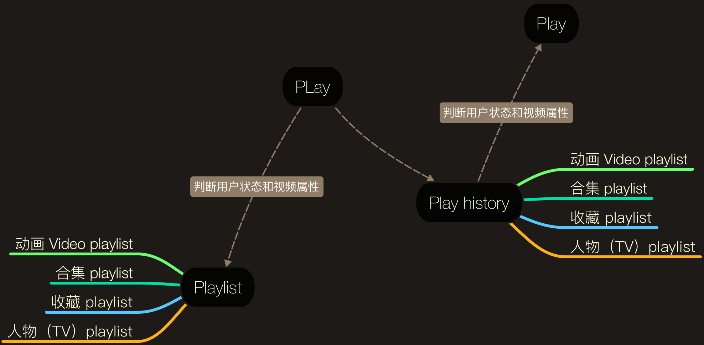

btv2.0 Key features
播放记录

生成播放记录的四个入口：
- 动画 Video Playlist
- 合集 Playlist
- 收藏 Playlist
- 人物（TV 版本） Playlist
播放记录的存储和展示：
- 每个playlist产生的播放记录，只存储playlist最后一个播放剧集的记录
- 不同时间播放的同一个 playlist 更新到当天的播放记录，之前的记录消失
- 展示的时间段：今天、昨天、更早
播放记录的中英文：
- 同一个 playlist 只会有一个播放记录，不会因为播放的中英文不同而有单独的中文播放记录/英文播放记录
- 播放记录中播放的剧集是英文，则从播放记录播放还是英文，列表中其他剧集如果有英文也是默认播放英文语音
播放前需要检测用户状态和剧集的付费属性：
- 免费用户，付费剧集-直接跳到付费界面
- 付费用户-直接播放
收藏
收藏的入口：播放器内
- 仅注册用户可以使用收藏功能
- 收藏只针对剧集，不会区分剧集的中英文，收藏的是一个剧集
- 收藏列表内按照剧集所属系列自动进行归类
下载
下载的入口：动画详情页
- 免费用户只能下载免费的剧集
- 下载的列表取到的数据是根据下载的内容 list（而不是播放的内容list），如果有缺失的下载内容，则不予显示
- 中文下载界面是中文信息，英文下载界面是英文信息
- 下载的中文内容在下载宝箱是中文信息，英文内容则显示英文信息
- 下载宝箱中同一系列剧集的中英文内容分两个目录，一个为中文，一个为英文
一个账户多孩子情况
- 每个孩子都有自己独立的播放记录、收藏、下载
- 在家长中心管理模块，则不会按照多孩子情况区分，是汇聚在一起的